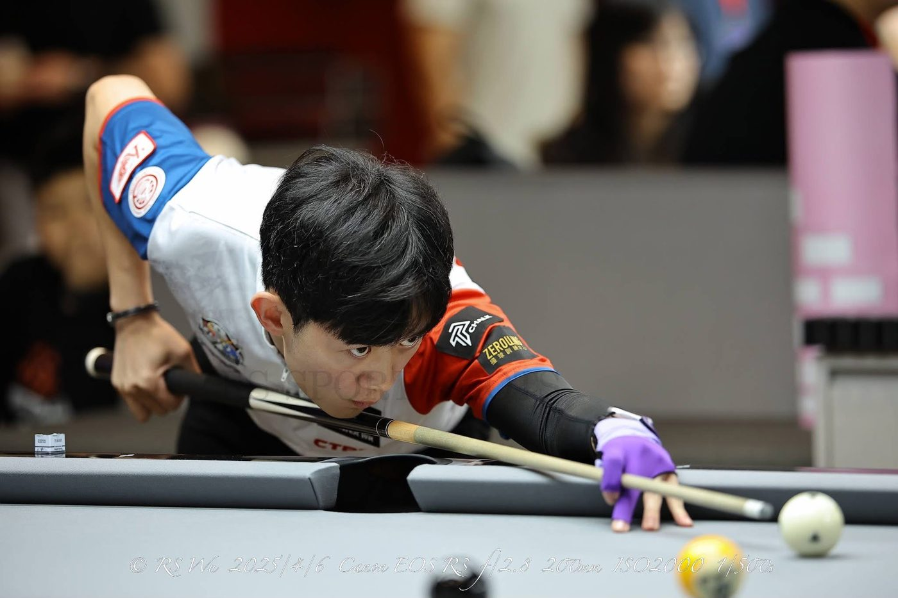
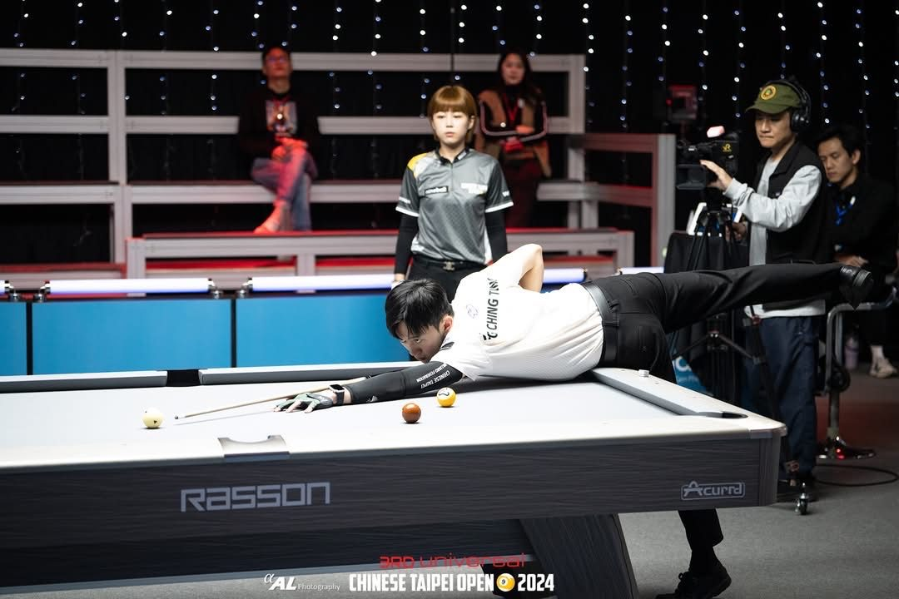

01我的故事
個人簡介
我是來自屏東的撞球選手，從9歲開始接觸撞球，一路上有著家人的信任與支持。國中時正式拜師學球，並在高中期間多次獲得全國賽事冠軍。
為了追尋夢想，大學時我選擇北上到台北發展，持續維持高強度訓練，並積極參與國內各項賽事。兩年前，我正式轉為職業撞球選手，踏上更高層級的競技舞台。
然而台灣職業撞球的舞台有限，因此我開始挑戰各大國際賽事。去年我參加了11場國際比賽，其中10場晉級單敗決賽，也在全日本公開賽中拿下第五名。世界排名也從兩百多一路攀升至百名初頭。

